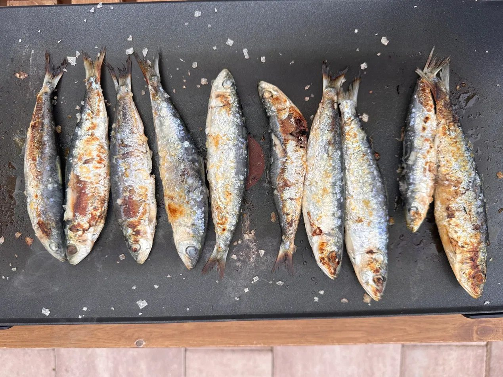

Sardinas a la plancha
Ingredientes
12 sardinas frescas enteras
Sal gorda
Aceite de oliva
1 limón
Preparación
Calentar la plancha.
Ponerla a
fuego fuerte
con un hilo de
aceite de oliva
.
A la plancha.
Colocar las
sardinas enteras
, sin limpiar, y echar
sal gorda
por encima.
Dar la vuelta.
Cuando estén doradas por abajo (unos
3 minutos
), girarlas y dejar otros 2–3 minutos.
Emplatar.
Servir enseguida y echar un buen chorro de
limón
por encima ya en el plato.
